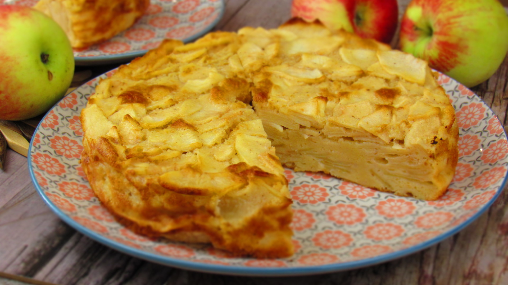
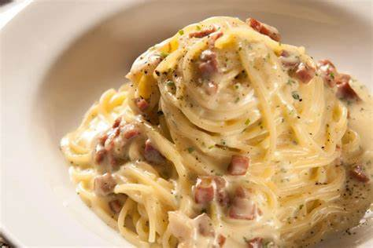
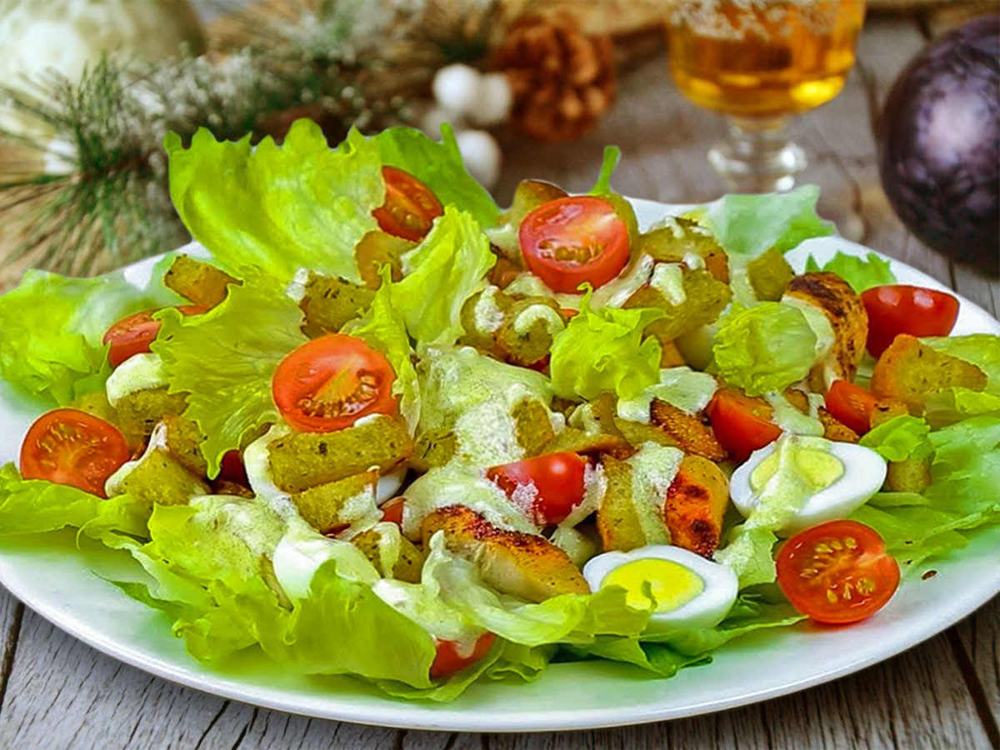
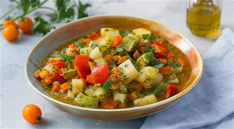

Вкусные Эксперименты

Рецепт 1: Пирог с яблоками
Нежный пирог с сочными яблоками, идеальный для семейного чаепития.

Рецепт 2: Спагетти карбонара
Классическое итальянское блюдо с насыщенным вкусом и ароматом.

Рецепт 3: Салат Цезарь
Свежий салат с хрустящими крутонами и нежным соусом.

Рецепт 4: Паста с лососем и шпинатом
Нежная паста с лососем и свежим шпинатом в сливочном соусе.

Рецепт 5: Овощное рагу
Сытное и полезное овощное рагу, идеально подходящее для быстрого ужина.